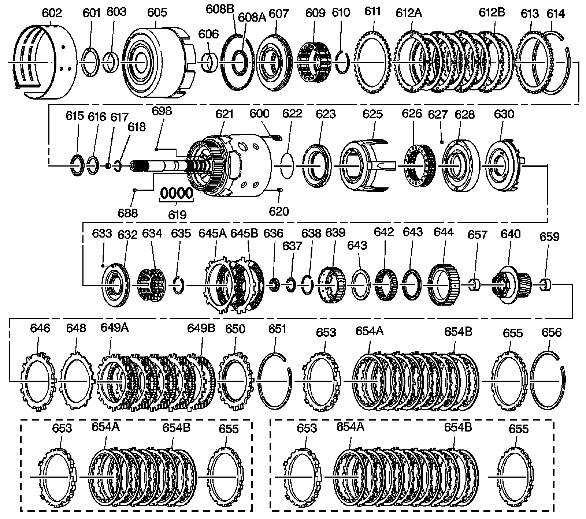
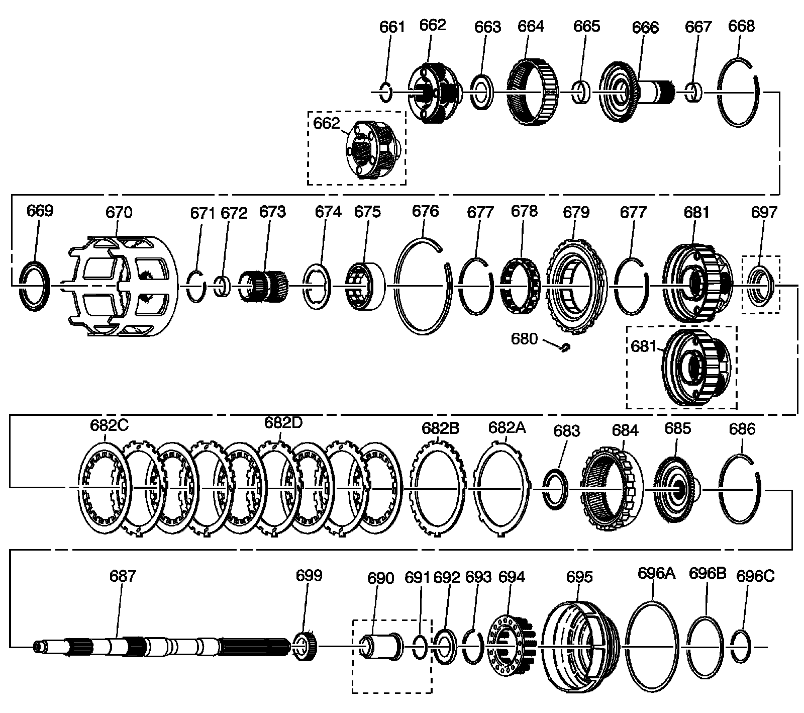

Internal Parts
Disassembled Views
Internal Parts:

600 - 3-4 Clutch Boost (5) Spring Assembly
601 - Thrust Washer - Pump to Drum
602 - 2-4 Band Assembly - Model Dependent
603 - Reverse Input Clutch Bushing - Front
605 - Reverse Input Clutch Housing and Drum Assembly
606 - Reverse Input Clutch Bushing - Rear
607 - Reverse Input Clutch Piston Assembly
608a - Reverse Input Clutch Seal - Inner
608b - Reverse Input Clutch Seal - Outer
609 - Reverse Input Clutch Spring Assembly
610 - Reverse Input Clutch Spring Retainer Ring
611 - Reverse Input Clutch Plate - Belleville
612a - Reverse Input Clutch Turbulator Plate - Steel
612b - Reverse Input Clutch Plate Assembly - Fiber
613 - Reverse Input Clutch Backing Plate - Selective
614 - Reverse Input Clutch Retaining Ring
615 - Stator Shaft/Selective Washer Bearing Assembly
616 - Thrust Washer - Selective
617 - Check Valve Retainer and Ball Assembly
618 - O-Ring Seal - Location Model Dependent
619 - Oil Seal Ring - Solid
620 - Retainer and Checkball Assembly
621 - Input Housing and Shaft Assembly - Model Dependent
622 - O-Ring Input to Forward Clutch Housing Seal
623 - 3rd and 4th Clutch Piston
625 - 3rd and 4th Clutch Ring - Apply
626 - 3rd and 4th Clutch Spring Assembly
627 - Forward Clutch Housing Retainer and Ball Assembly
628 - Forward Clutch Housing
630 - Forward Clutch Piston
632 - Overrun Clutch Piston
633 - Overrun Clutch Ball
634 - Overrun Clutch Spring Assembly
635 - Overrun Clutch Spring Retainer Snap Ring
636 - Input Housing to Output Shaft Seal
637 - Input Sun Gear Bearing Assembly
638 - Overrun Clutch Hub Retaining Snap Ring
639 - Overrun Clutch Hub
640 - Forward Sprag Clutch Inner Race and Input Sun Gear Assembly
642 - Forward Sprag Assembly
643 - Sprag Assembly Retainer Ring
643 - Sprag Assembly Retainer Ring
644 - Forward Clutch Race - Outer
645a - Overrun Clutch Plate - Steel
645b - Overrun Clutch Plate Assembly - Fiber
646 - Forward Clutch Plate - Apply
648 - Forward Clutch Plate - Waved
649a - Forward Clutch Plate - Steel
649b - Forward Clutch Plate Assembly - Fiber
650 - Forward Clutch Backing Plate - Selective
651 - Forward Clutch Backing Plate Retainer Ring
653 - 3rd and 4th Clutch Apply Plate - Stepped
653 - 3rd and 4th Clutch Apply Plate - Stepped
653 - 3rd and 4th Clutch Apply Plate - Stepped
654a - 3rd and 4th Clutch Plate Assembly - Fiber - Quantity Model Dependent 5, 6 or 7 Plates
654a - 3rd and 4th Clutch Plate Assembly - Fiber - Quantity Model Dependent 5, 6 or 7 plates
654a - 3rd and 4th Clutch Plate Assembly - Fiber - Quantity Model Dependent 5, 6 or 7 plates
654b - 3rd and 4th Clutch Plate - Steel - Quantity Model Dependent
654b - 3rd and 4th Clutch Plate - Steel - Quantity Model Dependent
654b - 3rd and 4th Clutch Plate - Steel - Quantity Model Dependent
655 - 3rd and 4th Clutch Backing Plate - Selective - Model Dependent
655 - 3rd and 4th Clutch Backing Plate - Selective - Model Dependent
655 - 3rd and 4th Clutch Backing Plate - Selective - Model Dependent
656 - 3rd and 4th Clutch Backing Plate Retainer Ring
657 - Input Sun Gear Front Bushing
659 - Input Sun Gear Rear Bushing
688 - Cup Plug
698 - Orificed Cup Plug
Internal Parts:

661 - Output Shaft to Input Carrier Retainer
662 - Input Carrier Assembly - 4 or 5 Pinion-Model Dependent
662 - Input Carrier Assembly
663 - Thrust Bearing Assembly - Input Carrier to Reaction Shaft
664 - Input Internal Gear
665 - Reaction Carrier Shaft Front Bushing
666 - Reaction Carrier Shaft
667 - Reaction Carrier Shaft Rear Bushing
668 - Reaction Shaft/Internal Gear Retainer Ring
669 - Thrust Bearing Assembly - Reaction Shaft Shell
670 - Reaction Sun Shell
671 - Reaction Sun Gear Retainer Ring
672 - Reaction Sun Bushing
673 - Reaction Sun Gear
674 - Thrust Washer - Race/Reaction Shell
675 - Low and Reverse Roller Clutch Race
676 - Low and Reverse Support to Case Retainer Ring
677 - Low and Reverse Roller Assembly Retainer Ring - Cam
677 - Low and Reverse Roller Assembly Retainer Ring - Cam
678 - Low and Reverse Roller Clutch Assembly
679 - Low and Reverse Clutch Support Assembly
680 - Low and Reverse Clutch Support Retainer Spring
681 - Reaction Carrier Assembly - 4 or 5 Pinion-Model Dependent
681 - Reaction Carrier Assembly - 4 or 5 Pinion-Model Dependent
682a - Low and Reverse Clutch Plate - Waved
682b - Spacer Low and Reverse Clutch Plate - Selective
682c - Low and Reverse Clutch Plate Assembly - Fiber
682d - Low and Reverse Clutch Turbulator Plate - Steel
683 - Thrust Bearing Assembly - Reaction Carrier/Support
684 - Internal Reaction Gear - Model Dependent
685 - Internal Reaction Gear Support - Model Dependent
686 - Reaction Gear/Support Retainer Ring
687 - Output Shaft - Model Dependent
690 - Output Shaft Sleeve - Model Dependent 2WD only
691 - Output Shaft Seal - Model Dependent 2WD only
692 - Reaction Gear Support to Case Bearing
693 - Low and Reverse Clutch Retainer Ring
694 - Low and Reverse Clutch Spring Assembly
695 - Low and Reverse Clutch Piston
696a - Low and Reverse Clutch Seal - Outer
696b - Low and Reverse Clutch Seal - Center
696c - Low and Reverse Clutch Seal - Inner
697 - Oil Deflector - High Output Models Only
699 - Internal Transmission Speed Sensor Rotor